용접기사 (2016-03-06 기출문제)
1과목: 기계제작법
1. 프레스가공에서 큰 판재를 재단할 때 또는 주어진 길이나 윤곽선에 다라 일부를 전단할 때 사용하는 전단 가공법은?
- 노칭 가공
- 블랭킹 가공
- 셰이빈 가공
- 슬리팅 가공
(정답률: 41%)

2. 스프링등과 같은 기계요소로 피로강도를 향상시키기 위해 작은 강구를 공작물의 표면에 충돌시켜서 가공하는 방법은?
- 숏 피닝
- 전해가공
- 전해연식
- 화학연마
(정답률: 78%)
3. 강(鋼)의 항온열처리의 종류가 아닌 것은?
- 마템퍼
- 마퀜칭
- 어닐링
- 오스템퍼
(정답률: 66%)
4. 절삭공구의 수명식인 Taylor 공구 구명식으로 옳은 것은? (단, V : 절삭속도(m/min), T : 공구수멸(min), n : 공구와 공작물에 의해 변하는 지수, C : 공구, 공작물, 절삭 조건에 따라 변하는 값(상수)이다.)
- VT=C
- VT=C2
- VTn=C
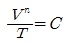
(정답률: 49%)
5. 테르밋 용접의 설명으로 옳은 것은?
- 원자수소의 반응열을 이용한 것
- 액체산ㅅ와 프랄즈마를 이용한 것
- 전기용접과 가스용접을 결합한 것
- 산화철과 알루미늄의 반응열을 이용한 것
(정답률: 84%)
6. 절삭 가공에서 발생하는 절삭저하의 분력 중 가장 큰 것은?
- 배분력
- 주분력
- 횡분력
- 이송분력
(정답률: 71%)
7. 프레스를 이용한 굽힘 가공에서 스프링 백(spring back)에 대한 설명으로 옳은 것은?
- 스프링의 피치를 나타낸다.
- 스프링에서 장력의 세기를 나타내는 척도이다.
- 판재를 굽혔을 때 굽힌 부분이 활 모양으로 되는 현상이다.
- 판재를 굽힐 때, 하중을 제거하면 탄성에 의해 처음 상태로 약간 복귀되는 현상이다.
(정답률: 75%)
8. 다음 절삭 공구의 재료 중에서 고온 경도가 가장 높은 것은?
- 고속도강
- 초경합금
- 탄소공구강
- 합금공구강
(정답률: 58%)
9. 금속 및 금속 화합물의 미분말을 가열하여 반용융 상태로 분출시켜 밀착 피복하는 방법은?
- 용사
- 스터드 용접
- 그래비티 용접
- 피복 아크 용접
(정답률: 58%)
10. 레핑(lapping)가공에 대한 특징으로 틀린 것은?
- 다음질면이 매끈하다.
- 마찰계수가 높아진다.
- 내식성 및 내마모성이 증가된다.
- 정밀도가 높은 제품을 만들 수 있다.
(정답률: 78%)
11. 주형의 부속품 중 코어의 길이가 가늘고 긴 제품에서 코어 프린트만으로는 코어의 휨이나 떠오름 등을 방지하지 못할 때 사용하는 것은?
- 중추
- 칠 메탈
- 스트레이너
- 코어 받침대
(정답률: 66%)
12. 밀링 머신(miling machine)의 크기를 표시하는 방법으로 옳은 것은?
- 중량으로 표시한다.
- 주축대의 크기로 표시한다.
- 아버의 지름과 길이로 표시한다.
- 테이블의 이송거리를 기준으로 표시한다.
(정답률: 56%)
13. 초음파 가공에 관한 특징으로 틀린 것은?
- 구멍을 가공하기 쉽다.
- 부도체는 가공할 수 없다.
- 복잡한 형상도 쉽게 가공 할 수 있다.
- 납, 구리
(정답률: 83%)
14. 로스크 왁스 주형법(Lost wax process)이라고도 하며, 양초나 합성수지를 용해시켜 주형 밖으로 흘려 배출하여 주형을 완성하는 정밀 주조법은?
- 셀 몰드법
- 진공 주조법
- 다이캐스팅법
- 인베스트먼트법
(정답률: 66%)
15. 소재의 장치된 코일에 전류를 흐르게 하고 유도열에 의해 사열하여 급냉시키는 표면 경화법은?
- 질화법
- 침탄법
- 화염경화법
- 고주파 경화법
(정답률: 66%)
16. 테이블 이송나사의 피치가 6mm인 밀링머신에서 지름 60mm의 환봉에 리드 280mm인 오른 나사 헬리컬 홀을 절삭하고자 한다. 이 때 테이블의 선회각은 약 얼마인가?
- 33.94°
- 43.94°
- 53.94°
- 63.94°
(정답률: 16%)
17. 밀링가공에서 지름이 50mm인 밀링커터를 사용하여 60m/min의 절상속도로 절삭하는 경우 밀링커터의 회전수는 약 몇 rpm인가?
- 284
- 382
- 468
- 681
(정답률: 47%)
18. 머시닝센터 가공에서 시셰방향 원호보건기능의 G-코드는?
- G01
- G02
- G03
- G04
(정답률: 50%)
19. 수나사의 바깥지름(호칭지름), 골지름, 유효지름, 나사산의 각도, 피치를 모두 측정할 수 있는 측정기는?
- 투영기
- 나사 게이지
- 피치 게이지
- 나사 마리크로미터
(정답률: 45%)
20. 피측정물을 확대 관측하여 복잡한 모양의 윤곽, 좌표의 측정, 나사 요소의 측정 등과 같이 단독 요소의 측정기로는 직접 측정할 수 없는 부분을 측정하기에 적합한 측정기는?
- 공구 현미경
- 센터 게이지
- 피치 게이지
- 나사 마이크로미터
(정답률: 75%)
2과목: 재료역학
21. 단면의 치수기 b×h=6cm×3cm인 강철보가 그림과 같은 하중을 받고 있다. 보에 작용하는 최대 굽힘응력은 약 몇 N/cm2인가?
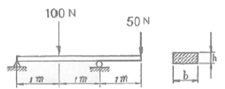
- 278
- 556
- 1111
- 2222
(정답률: 41%)
22. 힘에 의한 재료의 변형이 그 힘의 제거(除去)와 동시에 원형(原形)으로 복귀하는 재료의 성질은?
- 소성(plasticity)
- 탄성(elasticity))
- 연성(ductility)
- 취성(brittleness)
(정답률: 74%)
23. 그림과 같은 외팔보가 하중을 받도 있다. 고정단에 발생하는 최대굽힘 모멘트는 몇 Nm인가?
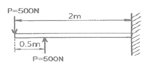
- 250
- 500
- 750
- 1000
(정답률: 46%)
24. 양단이 고정된 축을 그림과 같이 m-n 단면에서 T만큼 비틀면 고정단 AB에서 생기는 저항 비틀림 모멘트의 비 TA/TB는?
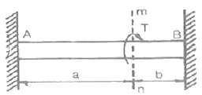
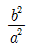
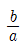
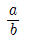
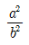
(정답률: 25%)
25. 그림과 같은 장주(long column)에 하중 Pcr을 가했더니 오른쪽 그림과 같이 좌굴이 일어났다. 이 때 오일러 좌굴응력 σσ은? (단, 세로탄성계수는 E, 기둥 단면의 회전반경(radius of gyration)은 r, 길이는 L이다.)
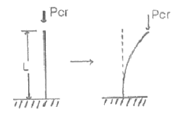
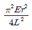
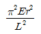
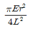
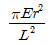
(정답률: 46%)
26. 그림과 같이 최대 q0인 삼각형 분포하중을 받는 버팀 외팔보에서 B 지점의 반력 RB를 구하면?
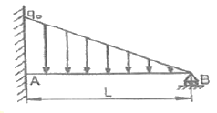
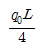
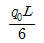
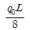
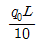
(정답률: 20%)
27. 그림과 같은 원형 단면봉에 하중 P가 작용할 때 이 봉의 신장량은? (단, 봉의 단면적은 A, 길이는 L, 세로탄성계수는 E이고, 자중 W를 고려해야 한다.)
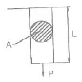
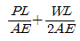
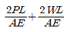
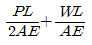
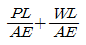
(정답률: 42%)
28. 다음과 같은 평면응력상태에서 최대전단응력은 약 몇 MPa인가?
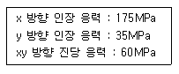
- 38
- 53
- 92
- 108
(정답률: 50%)
29. 보의 길이 ℓdp 등분포하중 w를 받는 직사각형 단순보의 최대 처짐량에 대하여 옳게 설명한 것은? (단, 보의 자중은 무시한다.)
- 보의 폭에 정비례한다.
- ℓㅢ 3승에 정비례한다.
- 보의 높이의 2승에 반비례한다.
- 세로탄성계수에 반비례한다.
(정답률: 47%)
30. 지름 d인 원형단면으로부터 절취하여 단면 2차 모멘트 I가 가장 트도록 사각형 단면 [폭(b)×높이(h)을 만들 때 단면 2차 모멘트를 사각형 폭(b)에 관한 식으로 옳게 나타낸 것은?
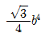
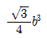
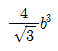
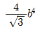
(정답률: 36%)
31. 재료시험에서 연강재료의 세로탄성계수가 210 GPa로 나타났을 때 포아송 비(v)가 0.303이면 이 재료의 전단탄성계수 G는 몇 GPa인가?
- 8.⑤
- 10.51
- 35.21
- 80.58
(정답률: 29%)
32. 그림과 같은 트러스 구조물의 AC, BC부재가 핀 C에서 수직하중 P=1000N의 하중을 받고 잇을 때 AC부재의 인장력은 약 몇 N인가?
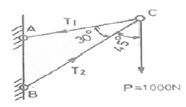
- 141
- 707
- 1414
- 1732
(정답률: 49%)
33. 그림과 같은 일단 고정 타단지지 보에 등분포하중 w가 작용하고 있다. 이 경우 반력 RA와 RB는? (단, 보의 굽힘강서 EI는 일정하다.)
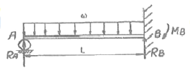
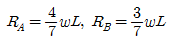
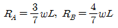
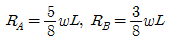
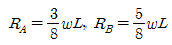
(정답률: 33%)
34. 다음 중 수직응력(normal stress)을 발생시키지 않는 것은?
- 인장력
- 압축력
- 비틀림 모멘트
- 굽힘 모멘트
(정답률: 56%)
35. 길이가 3.14m인 원형 단면의 축 지름이 40mm일 때 이 축이 비틀림 모멘트 100Nㆍm를 받는다면 비틀림각은? (단, 전단 탄성계수는 80GPa이다.)
- 0.156°
- 0.251°
- 0.895°
- 0.625°
(정답률: 44%)
36. 그림과 같이 강봉에서 A, B가 고정되어 있고 25℃에서 내부응력은 0인 상태이다. 온도가 -40℃로 내려갔을 때 AC 부분에서 발생하는 응력은 약 몇 MPa인가? (단, 그림에서 A1은 AC 부분에서의 단면적이다. 그리고 강봉의 탄성계수는 200GPa이고, 열팽창계수는 12×10-6/℃이다.)
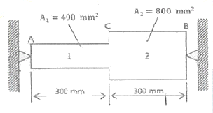
- 416
- 350
- 208
- 154
(정답률: 24%)
37. 그림과 가튼 블록의 한쪽 모서리에 수직력 10kN이 가해질 경우, 그림에서 위치한 A점에서의 수지응력 분포는 약 몇 kPa인가?
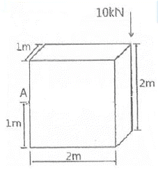
- 25
- 30
- 35
- 40
(정답률: 30%)
38. 바깥지름이 46mm인 속이 빈 축이 120kW의 동력을 전달하는 데 이 때의 각속도는 40rev/s이다. 이 축의 허용 비틀림 응력이 80MPa 일 때, 안지름은 약 몇 mm 이하이어야 하는가?
- 29.8
- 41.8
- 36.8
- 48.8
(정답률: 25%)
39. 직사각형 단면(폭×높이)이 4cm×8cm이고 길이 1m의 외팔보의 전 길이에 6kN/m의 등분포하중이 작용할 때 보의 최대 처짐각은? 9단, 탄성계수 E=210 GPa이고 보의 자중은 무시한다.)(오류 신고가 접수된 문제입니다. 반드시 정답과 해설을 확인하시기 바랍니다.)
- 0.0028rad
- 0.0028°
- 0.0008rad
- 0.0008°
(정답률: 35%)
40. 반지름이
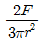
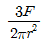
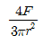
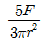
(정답률: 55%)
3과목: 용접야금
41. 다음 그림은 금속 A, B의 공정형 상태도이다. 공정점은?
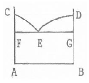
- C
- D
- E
- F
(정답률: 73%)
42. Fe-C평형 상태도에서 순철의 자기변태점(A2) 온도는 약 몇 ℃인가?
- 723℃
- 768℃
- 910℃
- 1492℃
(정답률: 58%)
43. 용융금속이 응고할 때 응고 온도차에 따라 농도차이를 일으키는 현상은?
- 편석
- 공석
- 포석
- 편정
(정답률: 75%)
44. 두 가지 이상의 금속 원소가 간단한 원자비로 결합되어 있는 물질로 MgCu2와 같은 물질을 무엇이라고 하는가?
- 필라이트
- 시멘타이트
- 금속간화합물
- 레데뷰라이트
(정답률: 84%)
45. 탄소강의 물리적 성질 중 탄소 함유량의 증가와 더불어 증가하는 것은?
- 비열
- 용융점
- 열팽창률
- 열전도도
(정답률: 56%)
46. 금속의 결함 중 선 결함에 해당되는 것은?
- 전위
- 원자공공
- 적총결함
- 결정립 경계
(정답률: 50%)
47. 탄소당량이 일반적으로 약 몇 % 이하일 때 용접성이 양호한 것으로 판단하는가?
- 0.4% 이하
- 1.0% 이하
- 2.1% 이하
- 4.3% 이하
(정답률: 84%)
48. 용접금속의 응고조직에서 형태를 결정하는 인자와 가장 관계가 없는 것은?
- 온도구배
- 용질농도
- 결정의 성장속도
- 모재의 결정구조
(정답률: 38%)
49. 백금-백금로듐 열전대로 가장 높은 온도를 측정하는데 적합한 열전대는?
- R-type(PR형)
- K-type(CA형)
- J-type(IC형)
- T-type(CC형)
(정답률: 65%)
50. 탄소강은 200~300℃에서 가장 취약하게 되는데, 이것을 무엇이라고 하는가?
- 저온취성
- 청열취성
- 천이취성
- 파괴취성
(정답률: 73%)
51. 금속의 조직에서 페라이트의 설명으로 옳은 것은?
- 6.67% 를 함유한 탄화철이다.
- 체심입방격자의 α철이며, C를 약 0.025% 까지 고용한다.
- 면심입방격자에 탄소를 고용한 상(相)으로 정사방정이다.
(정답률: 77%)
52. 스테인리스강 중 내식성이 가장 높고 비자성인 것은?
- 페라이트계 스테인리스강
- 석출경화계 스테인리스강
- 마텐자이트계 스테인리스강
- 오스텐나이트계 스테인리스강
(정답률: 82%)
53. 다음의 금속 중 경금속이 아닌 것은?
- Al
- Li
- Mg
- Mo
(정답률: 74%)
54. 심냉처리(sub-zero treatment)에 관한 설명 중 옳은 것은?
- 강의 연화 및 내부응력의 제거를 목적으로 하는 처리이다.
- 담금질 또는 불림처리한 강을 A1점 이하로 가열하여, 소정시간 유지한 다음 적당히 냉각 하는 처리이다.
- 강을 A3점 이상 약 30℃의 온도로 가열하고, 소정시간 유지한 다음 조용히 대기중에서 방치하여 냉각하는 처리이다.
- 잔류하는 오스테나이트를 마텐자이트화하기 위하여 상온으로 담금질한 강을 다시 0℃이하의 온도로 냉각하는 처리를 말한다.
(정답률: 86%)
55. 다음의 조직 중 경도가 가장 높은 것은?
- 페라이트
- 펄라이트
- 마텐자이트
- 트루스타이트
(정답률: 72%)
56. X-선의 회절현상으로 결정 구조를 확인할 수 있는 방법은?
- 브래그법
- 탐슨법
- 탐만법
- 깁스법
(정답률: 57%)
57. 용접구조물의 제작시 예열의 목적을 잘못 설명한 것은?
- 용접시 발생하는 변형을 경감시킨다.
- 용접구조물의 잔류 응력을 경감시킨다.
- 용접구조물의 비드 및 균열을 방지시킨다.
- 임계온도를 통과, 냉각될 때 냉각속도를 빠르게 한다.
(정답률: 72%)
58. 금속의 저온균열을 방지하기 위한 방법으로 틀린 것은?
- 용접봉의 건조
- 구속응력의 완화
- 확산 수소량의 최소화
- 합금원소 중 S, P의 증가
(정답률: 66%)
59. 강의 표면에 알루미늄을 침투시키는 처리로서 내(耐) 고온성의 확산 층을 생성하는 금속 침투법은?
- 보로나이징
- 크로마이징
- 칼로라이징
- 실리콘나이징
(정답률: 84%)
60. 주철을 고온으로 가열, 냉각 과정을 반복하면 부피가 팽창하는데 이러한 현상을 주철의 성장이라고 한다. 그 원인으로 틀린 것은?
- 펄라이트 조직 중의 Si의 산화
- 흡수된 가스의 팽창에 따른 부피 증가
- 펄라이트 조직 중의 Fe3C 분해에 따른 흑연화
- A1 변태의 반복과정에서 오는 체적 변화에 기인되는 미세한 균열의 발생
(정답률: 47%)
4과목: 용접구조설계
61. 용접부의 노치 취성 시험이 아닌 것은?
- 슈나트 시험
- 코머렐 시험
- 카안 인열 시험
- 샤르피 충격 시험
(정답률: 40%)
62. 다음 중 용접변형의 방지법이 아닌 것은?
- 억제법
- 냉각법
- 가압법
- 역변형법
(정답률: 43%)
63. 초음파 탐상법에서 통상적으로 적용하는 주파수 범위로 가장 적합한 것은?
- 0.5~1.5MHz
- 15~250MHz
- 250~500MHz
- 500~1000MHz
(정답률: 64%)
64. 맞대기 용접, 필릿 용접 등의 비드 표면과 모체와의 경계부에 발생되는 균열로, 구속 응력이 클 때 용접부의 가장자리에서 발생하여 성장하는 균열은?
- 토 균열
- 설퍼 균열
- 헤어 균열
- 크레이터 균열
(정답률: 72%)
65. 마찰발열에 의해 피 접합재를 가열 연화시키는 동시에 접촉부를 이동시켜 접합하는 것으로 재료의 소성유동을 이용한 마찰교반접합의 장점을 설명한 것으로 틀린 것은?
- 용가재, 보호가스가 필요 없다.
- 기공, 균열 등의 결함이 발생하지 않는다.
- 접합기구가 단순하고 접합인자가 적어 관리가 용이하다.
- 용접입열이 커서 접합부의 변형이 아크용접에 비해 매우 크다.
(정답률: 79%)
66. 용접균열시험에 속하지 않는 것은?
- 킨젤 시험
- 저온균열 시험
- 재열균열 시험
- 라멜라테어 시험
(정답률: 46%)
67. 용접부의 조립 순서에 대한 설명으로 옳은 것은?
- 대칭으로 용접으로 진행시킨다.
- 큰 구조물에서는 구조물의 끝에서 중앙으로 향하여 용접한다.
- 수축이 적은 이음을 먼저 용접하고 수축이 큰 이음은 다음에 한다.
- 가접은 본 용접에서보다도 지름이 두꺼운 용접봉을 사용한다.
(정답률: 76%)
68. 용접 검사법 중 기계적 시험이 아닌 것은?
- 경도 시험
- 굽힘 시험
- 피로 시험
- 파면 시험
(정답률: 38%)
69. 잔류융력을 경감시키기 위한 용착법은?
- 억제법
- 비석법
- 살수법
- 역변형법
(정답률: 69%)
70. 연강이라도 기온이 0℃ 이하로 떨어지면 저온균열이 발생하기 쉬우므로, 약 40~75℃로 용접 이음의 양쪽 폭 몇 mm정도를 예열하는 것이 가장 좋은가?
- 30mm
- 50mm
- 100mm
- 300mm
(정답률: 47%)
71. 맞대기 용접부에 15kN의 수직력이 작용할 때 이음부에 발생하는 인장 응력은? (단, 판두께는 6mm, 용접선의 길이는 250mm로 한다.)
- 7 N/mm2
- 10 N/mm2
- 13 N/mm2
- 19 N/mm2
(정답률: 70%)
72. 조립 및 용접과정에서 과도한 용접부가 되지 않게 하는 요령 중 틀린 것은?
- 적당한 용접부 크기로 할 것
- 용접부의 강도는 얇은 쪽을 기준으로 계산할 것
- 설계는 안전율을 고려하여 안전한 강도를 유지할 것
- 단속 필릿용접이음의 경우 다리길이는 크게 하고 용접 길이를 짧게 할 것
(정답률: 78%)
73. 다음 중 용입량에 가장 크게 영향을 미치는 것은?
- 용접 기류
- 용접사 기량
- 용접봉 종류
- 모재의 재질
(정답률: 68%)
74. 중판 이상의 두꺼운 판의 용접을 위한 홈 설계시 주의 사항으로 틀린 것은?
- 홈의 단면적은 가능한 작게 한다.
- 루트 반지름은 가능한 작게 한다.
- 루트 간격의 최대치는 사용 용접봉의 지름 이하로 한다.
- 용접봉이 전후 좌우로 움직일 수 있는 홈 각도를 최고 10° 정도 만든다.
(정답률: 45%)
75. 용접부의 피로 강고 향상법으로 틀린 것은?
- 용접부의 덧살을 가능한 크게 한다.
- 뒷면 용접으로 완전한 용입이 되도록 한다.
- 표면가공에 의하여 급격한 단면의 변화를 피한다.
- 가능한 응력집중부에는 용접 이음부를 두지 않는다.
(정답률: 79%)
76. 다음 중 용입에 영향을 주는 인자가 아닌 것은?
- 토치의 종류
- 흠의 각도
- 용접 전류
- 운봉속도
(정답률: 81%)
77. 용접전압 20V, 용접전류 120A, 용접속도 60cm/min로 용접할 때 용접 입열량은?
- 2000J/cm
- 2200J/cm
- 2400J/cm
- 2600J/cm
(정답률: 77%)
78. 일반적인 용접순서를 결정할 때 주의사항으로 틀린 것은?
- 리벳이음과 병행할 경우에는 용접이음을 먼저 한다.
- 가능한 물품의 중심에 대하여 항상 대칭으로 용접한다.
- 동일 평면 내에 이음이 많을 경우 수축은 가능한 가운데로 보낸다.
- 가능한 수축이 큰 이음을 먼저 용접하고, 수축이 작은 이음을 나중에 한다.
(정답률: 73%)
79. 용접 시 냉각 속도에 영향을 가장 적게 미치는 것은?
- 판 두께
- 이음 현상
- 예열 온도
- 용접봉 각도
(정답률: 77%)
80. 다음 중 외관검사 방법으로 검사할 없는 것은?
- 피트(Pit)
- 기공(Porosity)
- 언더컷(Under cut)
- 오버랩(Over lap)
(정답률: 66%)
5과목: 용접일반 및 안전관리
81. 피복아크용접에서 용접전류가 75A이고 용접봉의 지름이 2mm일 때 가장 적당한 차광 유리 번호는?
- 2~3번
- 8~9번
- 12~13번
- 14~15번
(정답률: 59%)
82. 아크 용접의 준류에 속하지 않는 것은?
- Stud Welding
- Projection Welding
- Submerged arc Welding
- Shielded metal arc Welding
(정답률: 63%)
83. 가스용접에서 알루미늄 용접 시 용제 구성으로 틀린 것은?
- 염산칼륨 3%
- 염화칼륨 45%
- 염화리튬 15%
- 염화나트륨 30%
(정답률: 63%)
84. 팁 끝이 모재에 닿아 순간적으로 팁 끝이 막히거나 팁의 과열, 사용 가스의 압력이 부적장할 때, 팁 속에서 폭발음이 나며 불꽃이 꺼졌다가 다시 나타나는 현상은?
- 역류(contra flow)
- 역화(back fire)
- 인화(flash back)
- 점화(ignite)
(정답률: 61%)
85. 연강용 가스용접봉의 성분 중 강의 강도를 증가시키거나 연신율, 굽힘성 등은 감소시키는 원소는?
- P
- S
- Si
- C
(정답률: 70%)
86. 연강의 점 용접 특징으로 옳은 것은?
- 용접부는 경화되기 쉽고 눌린 흔적도 깊다.
- 녹이 생기지 않으므로 표면처리가 필요없다.
- 전기 및 열전도성이 좋은 전극팁을 사용한다.
- 용접부는 주상의 조직이며 열열향부는 초대화된 과열조직이다.
(정답률: 48%)
87. 24V 전압, 200A 전류에서 6cm/min의 용접속도로 용접하였을 경우의 용접 입열량을 계산하면 몇 J/cm 인가?
- 29000
- 32000
- 48000
- 58000
(정답률: 66%)
88. 연강용 피복아크 용접봉 중 E4324의 피복제 계통은?
- 특수계
- 철분저수소계
- 철분산화티탄계
- 고셀룰로오스계
(정답률: 63%)
89. 모재와 전국 사이에 아크령릉 이용하는 방법으로 용접작업에서의 주된 에너지원은?
- 전기 에너지
- 가스 에너지
- 기계적 에너지
- 전자파 에너지
(정답률: 86%)
90. 저수소계 용접봉을 사용하기 위해 용접봉 건조로를 이용하여 건조를 하려고 한다. 건조 온도는 몇 ℃ 정도로 하는 것이 가장 적당한가?
- 70℃ 미만
- 70~100℃
- 11~150℃
- 300~350℃
(정답률: 80%)
91. 불활성 가스 아크 용접(inert gas arc Welding)에 사용하는 가스는?
- 아르곤, 헬륨
- 산소, CO2
- 질소, 네온
- 산소, 질소
(정답률: 88%)
92. 액체산소 1ℓ를 기화하면 몇 ℓ\의 기체로 되는가?
- 314
- 380
- 720
- 900
(정답률: 53%)
93. 내균열성이 가장 우수한 피복아크 용접봉은?
- E 4301
- E 4303
- E 4311
- E 4327
(정답률: 40%)
94. 전기 저항 용접에 속하지 않는 것은?
- 점 용접
- 심 용접
- 플래시 용접
- 전자빔 용접
(정답률: 68%)
95. 산화철 분말과 알루미늄 분말을 혼합하여 발생하는 반응열을 이용한 용접법은?
- 고상 용접
- 테르밋 용접
- 플라즈마 아크 용접
- 일렉트로 슬래그 용접
(정답률: 76%)
96. 아크 열에 의한 모재의 용입에서 용융지의 깊이 (penetration)에 영향을 주는 인자가 아닌 것은?
- 극성
- 전류량
- 용착금속의 양
- 용접봉의 지름과 운봉속도
(정답률: 72%)
97. 용융금속의 이행과정에서 용착작용에 영향을 미치는 인자가 아닌 것은?
- 단락특성
- 용접금속의 표면장력
- 핀치효과(pinch effect)
- 자기불림(magnetic blow)
(정답률: 39%)
98. 피복 아크용접에서 피보게의 역할이 아닌 것은?
- 요악금속의 보호
- 용착금속에 수소의 공급
- 용착금속의 탈산정련작용
- 용이한 아크의 발생과 아크의 안전
(정답률: 78%)
99. 용접부의 검사법 중 용접성 시험에 해당되는 것은?
- 피로시험
- 부식시험
- 파면시험
- 노치 취성 시험
(정답률: 50%)
100. 피복아크 용접에서 아크 쏠림의 방지책이 아닌 것은?
- 아크 길이를 짧게 한다.
- 접지점 2개를 연결한다.
- 정극성 역극성으로 한다.
- 용접봉 끝을 아크 솔림 반대 방향으로 기울인다.
(정답률: 73%)